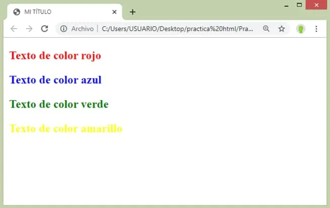
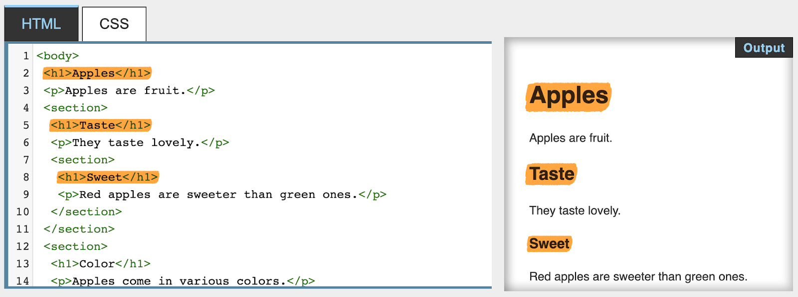
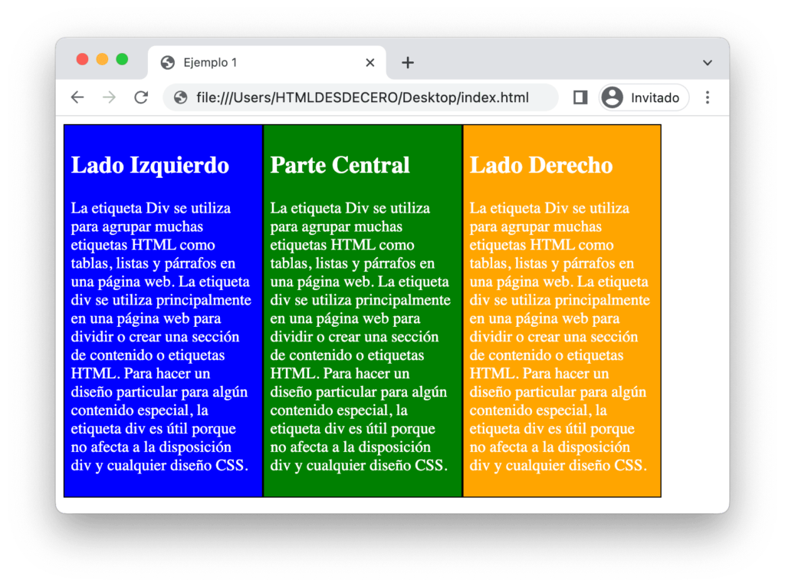
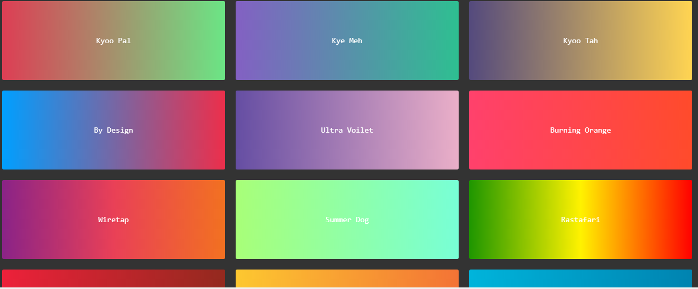

Propiedades CSS Más Utilizadas
| Nombre de la Propiedad | Sintaxis | Descripción | Ejemplo | Imagen |
|---|---|---|---|---|
| color | color: valor; |
Define el color del texto de un elemento. Puede aceptar valores en nombres de color. |
Este ejemplo establece el color del texto de todos los párrafos en rojo. |
 |
| font-size | font-size: valor; |
Establece el tamaño de la fuente del texto. Los valores pueden ser en unidades absolutas (px, pt) o relativas (em, rem, %). |
Este ejemplo asigna un tamaño de fuente de 24 píxeles a todos los encabezados |
 |
| margin | margin: valor; |
Define el espacio exterior alrededor de un elemento. Puede especificarse para cada lado (top, right, bottom, left) o en una sola declaración para todos los lados. |
Este ejemplo establece un margen de 10 píxeles en la parte superior e inferior y 20 píxeles en los lados derecho e izquierdo de todos los |
 |
| padding | padding: valor; |
Establece el espacio interior entre el contenido de un elemento y su borde. Similar a margin, puede especificarse para cada lado o en una sola declaración para todos los lados. |
Este ejemplo aplica un relleno de 15 píxeles en todos los lados de cada |
 |
| background-color | background-color: valor; |
Define el color de fondo de un elemento. Acepta valores en nombres de color, hexadecimal, RGB, RGBA, HSL, HSLA, entre otros. |
Este ejemplo asigna un color de fondo gris claro al |
 |